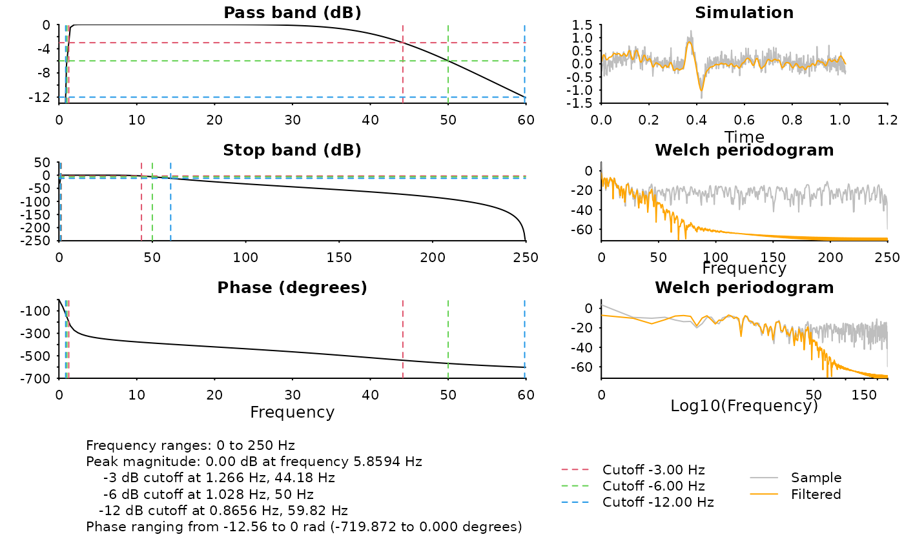

Large filter order might not be optimal, but at lease this function
provides a feasible upper bound for the order such that the
filter has a stable AR component.
Examples
# Find highest order (sharpest transition) of a band-pass filter
sample_rate <- 500
nyquist <- sample_rate / 2
type <- "pass"
w <- c(1, 50) / nyquist
Rs <- 6 # power attenuation at w
# max order filter
filter <- butter_max_order(w, "pass", Rs)
# -6 dB cutoff should be around 1 ~ 50 Hz
diagnose_filter(filter$b, filter$a, fs = sample_rate)
